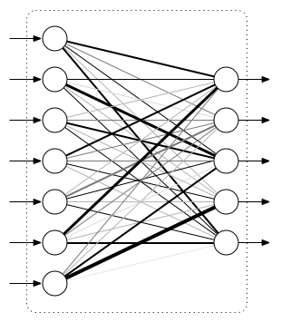

- Installation and Setup
- What's TensorFlow?
- Machine Learning Primer
- Basic TensorFlow concepts
- MNIST Example
- Softmax
- Convoluted Neural Networks
Agenda
Agenda
Installation and Setup
Installation and Setup
Ensure that you have the following installed:
- TensorFlow: https://www.tensorflow.org/install/
- Python 3: https://www.python.org/downloads/
- Jupyter (recommended): http://jupyter.org/
Materials are available here
Machine Learning Primer
Machine Learning Primer
Structure in data
Structure in data
- some interpretations to "structure in data"
- given some data, one can predict other data points with some confidence
- one can compress the data, i.e., store the same amount of information, with less space
- we might say that \(A\) has apparent structure while \(B\) does not
Entropy
Entropy
- quantified as Entropy of Process
\[H(X) = -\sum_{i=1}^{N} p(x_i) \log p(x_i)\]
- If entropy increases, uncertainty in prediction increases
Entropy (examples)
Entropy (examples)
- Example: fair dice
\[H(\text{fair dice roll}) = -\sum_{i=1}^6 \frac{1}{6} \log \frac{1}{6}=2.58\]
- Example: biased 20:80 coin
\[H(20/80 \text{ coin toss}) = -\frac{1}{5}\log \frac{1}{5}-\frac{4}{5}\log \frac{4}{5} = 0.72\]
- biased coin toss has lower entropy; predicting its outcome is easier than a fair dice
Basic Concepts for TensorFlow
Basic Concepts for TensorFlow
Recall from linear algebra that:
- Scalar: an array in 0-D
- Vector: an array in 1-D
- Matrix: an array in 2-D
All are tensors of n-order. Similary, tensors can be transformed with operations. Simple linear regression model:
\[w_o + w_1 x = \hat{y}\]
\(w_0\) and \(w_1\) are weights, that are determined during training. \(\hat{y}\) is predicted outcome
Graph Representation of ML Models
Graph Representation of ML Models
Can represent linear regression as a graph

- operations are represented as nodes
- graph shows how data is transformed by nodes and what is passed between them
Graph Representation of ML Models (1)
Graph Representation of ML Models (1)
Consider a slightly larger neural net graph:

For more complex models, it could be helpful to visualize your graph. TensorBoard provides this virtualization tool
Activation Functions
Activation Functions
- If \(g(u)\) is linear, then we return to linear regression
- In practice, \(g(\dots)\) is non-linear, and a popular function is the rectified linear unit (ReLU):
\[g(u) = max(0, u)\]
Model Output
Model Output
- output depends on activation function used, but is generally any real number \([-\infty, \infty]\)
- For binary classification, an additional sigmoid function can be applied to bring the output to range of \([0,1]\)
\[S(x) = \frac{1}{1+e^{-x}}\]

Softmax Function
Softmax Function
- for multi-class prediction a softmax function is used:
\[S_j(\boldsymbol{z}) = \frac{e^{z_j}}{\sum_{k=1}^K e^{z_k}} \text{ for }j=1,\dots,k\]
- squash \(K\) dimensional vector z to a \(K\) dimensional vector that sum to 1
\[\sum_{j=1}^k S_j(\boldsymbol{z}) = 1\]
- state usually represented with one-hot encoding, e.g for dice roll \((0,0,1,0,0,0)\)
Basic TensorFlow Concepts
Basic TensorFlow Concepts
What is TensorFlow?
What is TensorFlow?
- It is Google's AI Engine
- "TensorFlow is an interface for expressing machine learning algorithms, and an implementation for executing such algorithms"
- Originally developed Google Brain Team to conduct machine learning research and deep neural networks research
- General enough to be applicable to a wide variety of other domains
Data Flow Graphs
Data Flow Graphs
Tensorflow separates definition of computations from their execution
Phases:
- assemble the graph
- use a
sessionto execute operations in the graph
import tensorflow as tf a = tf.add(3,5)
Visualizing with TensorBoard
Visualizing with TensorBoard
tf.summary.FileWriterserializes the graph into a format the TensorBoard can read
tf.summary.FileWriter("logs", tf.get_default_graph()).close()
- in the same directory, run:
tensorboard --logdir=logs
- This will launch an instance of TensorBoard that you can access at http://localhost:6006
How to get value of a?
How to get value of a?
print(a)
Create a session, and within it, evaluate the graph
sess = tf.Session() print(sess.run(a)) sess.close()
Alternatively:
with tf.Session() as sess:
print(sess.run(a))
Practice with More Graphs
Practice with More Graphs
Try to generate the following graph:
Useful functions: tf.add, tf.multiply, tf.pow
Solution
Solution
x = 2
y = 3
op1 = tf.add(x, y)
op2 = tf.multiply(x, y)
op3 = tf.pow(op1, op2)
with tf.Session() as sess:
op3 = sess.run(op3)
TensorFlow Variables
TensorFlow Variables
- TensorFlow variables used to represent shared, persistant state manipulated by your program
- variables hold and update parameters in your model during training
- variables contain tensors
W1 = tf.ones((2,2))
W2 = tf.Variable(tf.zeros((2,2)), name="weights")
with tf.Session() as sess:
print(sess.run(W1))
sess.run(tf.global_variables_initializer())
print(sess.run(W2))
Updating Variable State
Updating Variable State
Use tf.assign to assign a value to a variable
state = tf.Variable(0, name="counter")
new_value = tf.add(state, tf.constant(1))
update = tf.assign(state, new_value)
with tf.Session() as sess:
sess.run(tf.global_variables_initializer())
print(sess.run(state))
for _ in range(3):
sess.run(update)
print(sess.run(state))
Fetching Variable State
Fetching Variable State
input1 = tf.constant(3.0)
input2 = tf.constant(2.0)
input3 = tf.constant(5.0)
intermed = tf.add(input2, input3)
mul = tf.multiply(input1, intermed)
with tf.Session() as sess:
result = sess.run([mul, intermed])
print(result)
TensorFlow Placeholders
TensorFlow Placeholders
tf.placeholdervariables represent our input datafeed_dictis a python dictionary that mapstf.placeholdervariables to data
input1 = tf.placeholder(tf.float32)
input2 = tf.placeholder(tf.float32)
output = tf.multiply(input1, input2)
with tf.Session() as sess:
print(sess.run([output], feed_dict={input1:[7.], input2:[2.]}))
Example: Linear Regression
Example: Linear Regression
Recap
Recap
- we have two weights \(w_0\) and \(w_1\), we want the model to figure out good weights by minimizing prediction error
- define the following loss function
\[L = \sum (y - \hat{y})^2\]
Supose we want to model the following "unknown" function:
\[y = x + 20 \sin(x/10)\]
Plot Input Data
Plot Input Data
Make sure that seaborn and matplotlib are installed. If you are using Jupyter, add %matplotlib inline in the code cell.
import tensorflow as tf import numpy as np import seaborn import matplotlib.pyplot as plt %matplotlib inline # Define input data X_data = np.arange(100, step=.1) y_data = X_data + 20 * np.sin(X_data/10) # Plot input data plt.scatter(X_data, y_data)
Scatter Plot
Scatter Plot

Define Variables and Placeholders
Define Variables and Placeholders
# Define data size and batch size n_samples = 1000 batch_size = 100 # TensorFlow is particular about shapes, so resize X_data = np.reshape(X_data, (n_samples, 1)) y_data = np.reshape(y_data, (n_samples, 1)) # Define placeholders for input X = tf.placeholder(tf.float32, shape=(batch_size, 1)) y = tf.placeholder(tf.float32, shape=(batch_size, 1))
Loss Function
Loss Function
Loss function is defined as: \[J(W,b) = \frac{1}{N}\sum_{i=1}^{N}(y_i-(W_{x_i}+b))^2\]
# Define variables to be learned
with tf.variable_scope("linear-regression"):
W = tf.get_variable("weights", (1,1),
initializer = tf.random_normal_initializer())
b = tf.get_variable("bias", (1,),
initializer = tf.constant_initializer(0.0))
y_pred = tf.matmul(X, W) + b
loss = tf.reduce_sum((y - y_pred)**2/n_samples)
Define Optimizer and Train Model
Define Optimizer and Train Model
# Define optimizer operation
opt_operation = tf.train.AdamOptimizer().minimize(loss)
with tf.Session() as sess:
# Initialize all variables in graph
sess.run(tf.global_variables_initializer())
# Gradient descent for 500 steps:
for _ in range(500):
# Select from random mini batch
indices = np.random.choice(n_samples, batch_size)
X_batch, y_batch = X_data[indices], y_data[indices]
# Do gradient descent step
_, loss_val = sess.run([opt_operation, loss], feed_dict={X: X_batch, y: y_batch})
print(sess.run([W, b]))
# Display results
plt.scatter(X_data, y_data)
plt.scatter(X_data, sess.run(W) * X_data + sess.run(b), c='g')
Results
Results

MNIST and TensorFlow
MNIST and TensorFlow
Introduction
Introduction
- MNIST is the hello world of machine learning
- Simple computer vision dataset, consists of images of handwritten digits
- We are going to train a model to predict what the digits are

Importing MNIST Data
Importing MNIST Data
To download and read in the data automatically:
from tensorflow.examples.tutorials.mnist import input_data
mnist = input_data.read_data_sets("MNIST_data/", one_hot=True)
One hot encoding
- labels have been converted to a vector of length equal to number of classes.
- the ith element is 1, rest are 0. E.g. Digit 1: \([0,1,\dots]\)
MNIST Data
MNIST Data
The MNIST data is split into three parts:
- 55,000 data points of training data (
mnist.train) - 10,000 data points of test data (
mnist.test) - 5,000 data points of validation data (
mnist.validation)
Every MNIST data has 2 parts:
- an image of a handwritten digit (call it "x")
- corresponding label (call it "y")
Softmax Regression
Softmax Regression
Overview
Overview

Overview (1)
Overview (1)


Defining Our Model
Defining Our Model
- multiply 784-dimensional vectors by \(W\) to produce 10-dimensional vectors of evidence
x = tf.placeholder(tf.float32, [None, 784]) W = tf.Variable(tf.zeros([784, 10])) b = tf.Variable(tf.zeros([10])) y = tf.nn.softmax(tf.matmul(x, W) + b)
- multiply
xwithWin that order asxhas shape[None, 784]andWhas shape[784, 10] - Small trick to deal with
xbeing a 2D tensor with multiple inputs.
Training
Training
Use cross-entropy to determine loss of model: \[H_{y'}=-\sum_{i} y_i' \log(y_i)\]
Where:
- \(y\) is our predicted probability distribution
- \(y'\) is the true distribution (one-hot vector with digit labels)
Training (1)
Training (1)
Need a placeholder to implement cross entropy:
y_ = tf.placeholder(tf.float32, [None, 10])
cross_entropy = tf.reduce_mean(-tf.reduce_sum(y_ * tf.log(y),
reduction_indices = [1]))
tf.reduce_sum computes the sum of elements across dimensions of a tensor
# 'x' is [[1, 1, 1] # [1, 1, 1]] tf.reduce_sum(x) ==> 6 tf.reduce_sum(x, 0) ==> [2, 2, 2] tf.reduce_sum(x, 1) ==> [3, 3]
Training (2)
Training (2)
train_step = tf.train.GradientDescentOptimizer(0.5).minimize(cross_entropy)
sess = tf.Session()
sess.run(tf.global_variables_initializer())
for _ in range(400):
batch_xs, batch_ys = mnist.train.next_batch(100)
sess.run(train_step, feed_dict={x: batch_xs, y_: batch_ys})
Using small batches of random data is called stochastic training, it is more feasible than training on the entire data set
Evaluating Our Model
Evaluating Our Model
tf.argmaxis an extrememly helpful function that returns the index of the highest entry in a tensor along some axis.tf.argmax(y,1)is predicted label whiletf.argmax(y_, 1)is the actual labeltf.equalto check if prediction matches the true
correct_prediction = tf.equal(tf.argmax(y,1), tf.argmax(y_,1))
accuracy = tf.reduce_mean(tf.cast(correct_prediction, tf.float32))
print(sess.run(accuracy, feed_dict={x: mnist.test.images, y_: mnist.test.labels}))
Approx 91% is very bad, 6 digit ZIP code would have an accuracy rate of 57%
Convolutional Neural Network
Convolutional Neural Network
Introduction
Introduction
- Convolutional Networks work by moving smaller filter across the input image
- Filters are re-used for recognizing patters throughout the entire input image
- This makes Convolutional Networks much more powerfule than Fully-Connected networks with the same number of variables
- Convolutional Networks are also faster to train
Flowchart
Flowchart

Features
Features

Features (1)
Features (1)

Convolution
Convolution

Convolution (1)
Convolution (1)
Convolution (2)
Convolution (2)

Pooling
Pooling

Pooling (1)
Pooling (1)

Fully Connected Layers
Fully Connected Layers

Hyper Parameters
Hyper Parameters
- Convolution:
- Number of features
- Size of features
- Pooling
- Window size
- Window stride
- Fully Connected
- number of neurons
Weight Initialization
Weight Initialization
Helper functions to create ReLU neurons
def weight_variable(shape): initial = tf.truncated_normal(shape, stddev=0.1) return tf.Variable(initial) def bias_variable(shape): initial = tf.constant(0.1, shape=shape) return tf.Variable(initial)
Convolution and Pooling
Convolution and Pooling
def conv2d(x, W):
return tf.nn.conv2d(x, W, strides=[1, 1, 1, 1], padding='SAME')
def max_pool_2x2(x):
return tf.nn.max_pool(x, ksize=[1, 2, 2, 1],
strides=[1, 2, 2, 1], padding='SAME')
First Convolutional Layer
First Convolutional Layer
- first layer consists of convolution and then max pooling
- compute 32 fearures for each 5x5 patch
- also define our bias
W_conv1 = weight_variable([5, 5, 1, 32]) b_conv1 = bias_variable([32]) x_image = tf.reshape(x, [-1, 28, 28, 1]) # ?, width, height, number of color channels h_conv1 = tf.nn.relu(conv2d(x_image, W_conv1) + b_conv1) h_pool1 = max_pool_2x2(h_conv1) # reduce image to 14x14
Second Convolutional Layer
Second Convolutional Layer
- 64 features for each 5x5 patch
- image is now 7x7
W_conv2 = weight_variable([5, 5, 32, 64]) b_conv2 = bias_variable([64]) h_conv2 = tf.nn.relu(conv2d(h_pool1, W_conv2) + b_conv2) h_pool2 = max_pool_2x2(h_conv2)
Densely Connected Layer
Densely Connected Layer
- add a fully connected layer with 1024 neurons to allow processing of the entire image
- reshape tensor from pooling layer into batch of vectors, muplity by a weight matrix, add a bias and then apply ReLU
W_fc1 = weight_variable([7 * 7 * 64, 1024]) b_fc1 = bias_variable([1024]) h_pool2_flat = tf.reshape(h_pool2, [-1, 7*7*64]) h_fc1 = tf.nn.relu(tf.matmul(h_pool2_flat, W_fc1) + b_fc1)
Read Out Layer
Read Out Layer
Add one last layer, similar to softmax regression
W_fc2 = weight_variable([1024, 10]) b_fc2 = bias_variable([10]) y_conv = tf.matmul(h_fc1, W_fc2) + b_fc2
Train and Evaluate the Model
Train and Evaluate the Model
cross_entropy = tf.reduce_mean(
tf.nn.softmax_cross_entropy_with_logits(labels=y_, logits=y_conv))
train_step = tf.train.AdamOptimizer(1e-4).minimize(cross_entropy)
correct_prediction = tf.equal(tf.argmax(y_conv, 1), tf.argmax(y_, 1))
accuracy = tf.reduce_mean(tf.cast(correct_prediction, tf.float32))
Train and Evaluate the Model (1)
Train and Evaluate the Model (1)
sess = tf.Session()
sess.run(tf.global_variables_initializer())
with sess.as_default():
for i in range(500):
batch = mnist.train.next_batch(50)
if i % 100 == 0:
train_accuracy = accuracy.eval(feed_dict={
x: batch[0], y_: batch[1]})
print('step %d, training accuracy %g' % (i, train_accuracy))
train_step.run(feed_dict={x: batch[0], y_: batch[1]})
print('test accuracy %g' % accuracy.eval(feed_dict={
x: mnist.test.images, y_: mnist.test.labels}))
Saving and Restoring your model
Saving and Restoring your model
Exporting the Model
Exporting the Model
- We can export the model for use in our own applications
- use
tf.train.Saverto save the graph and the trained weights
model_path = "./tmp/model.ckpt"
save_path = saver.save(sess, model_path) # saver is not declared???
print("Model saved in file: %s" % save_path)
Restoring the Session
Restoring the Session
saver = tf.train.Saver()
model_path = "./tmp/model.ckpt"
with tf.Session() as sess:
sess.run(tf.global_variables_initializer())
saver.restore(sess, model_path)
print("Accuracy:", accuracy.eval({x: mnist.test.images, y_: mnist.test.labels}))
Toy Program
Toy Program
References
References
Thank You